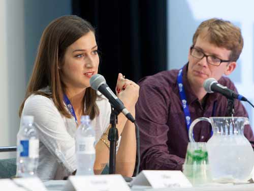
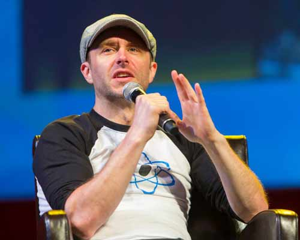
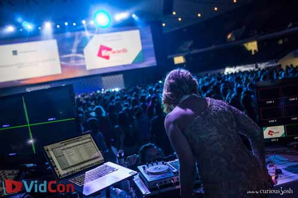
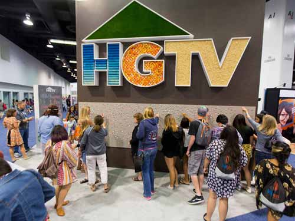
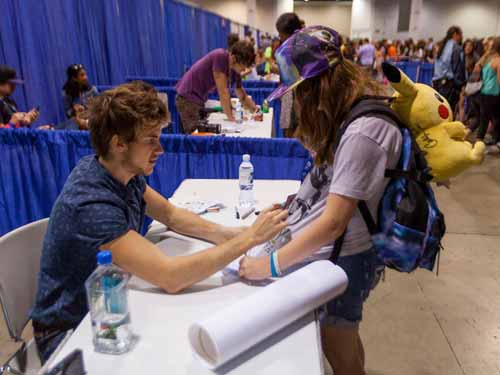
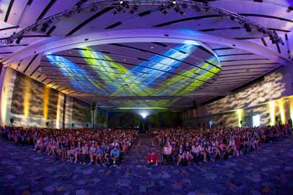

VLOGBROTHERS
My brother and I started making videos on YouTube over five years ago. It started out as a project to help us get to know each other again, but it has become a lot more than that. The Vlogbrothers channel now has more than 600,000 subscribers and our videos have been viewed more than 200 million times.
Our goals have broadened and now we use the Vlogbrothers channel as a platform for educational, informational, and entertaining content. The unironic enthusiasm of our viewers, the Nerdfighters, has been a remarkable inspiration and has allowed us to do some really wonderful and amazing things, including most of the projects listed on this page.
Current Video
VIDCON
- 
- 
- 

- 
- 
- 
I knew that someone was going to make a conference for the growing world of online video and I was terrified that they were going to do a bad job. I also knew that it was going to be really hard and really stressful, but I had to do it. With the help of my friends at Mischief Management, the first VidCon went off fantastically in 2010, selling out with over 1,000 tickets sold.
I think VidCon has been successful because we focus first on making sure that everyone has a great time. When people are having fun, that's when the strongest friendships, the best partnerships, and the coolest ideas are created. VidCon focuses on community, but still pulls executives from industries ranging from traditional media, to technology, to consumer electronics.
VidCon 2012 will be moving to the Anaheim Convention Center, where we expect to sell out all 5,000 tickets that we have available.
DFTBA RECORDS
DFTBA Records is a record label and distribution company that focuses on the needs of successful online entertainers, people who have created their own communities, done their own marketing, and grown their own brand. The massive infrastructure and corresponding high costs of traditional record labels do not make sense for this new generation of creators. However, they still need a personal touch and do business in high enough volumes to require a robust production, distribution, and product management service.
"We want to help creative people make a living doing the work they love. And, of course, we want their customers and communities to have the best possible experience and receive products they’ll love."
–Hank Green
DFTBA Records exists to meet these people's needs. We help make it possible for these people to be full time creators while providing the highest quality products and excellent customer service to their communities. DFTBA stands for Don't Forget to be Awesome, which isn't just the central idea of DFTBA Records, it's something we should all remember when doing business and living our lives.
PROJECT FOR AWESOME
At the end of our first year of video blogging in 2007, John and I realized that we had actually built up some skills and a community that would make it possible to pull off a pretty epic online event. We called it the Project for Awesome, and it was a day in which we organized the YouTube community to use every trick in the book to take over the site.
But instead of focusing on increasing our views, we'd be using it to promote charities that mattered to us. Over the years, the P4A has grown and evolved. YouTube, instead of being shocked and awed by the underground movement, has become a major player in the project. And we no longer just promote charities, we also raise money for them; over $200,000 in the last two years. Our goals continue to expand, so keep your eyes out next December for even more P4A goodness.
SCI SHOW
I love science, but I only get so many Vlogbrothers videos per week and I know some people can get science'd out. So in late 2011, I started working on a new channel that would bring the coolest concepts and science news to our viewership nearly every day of the week. It's called SciShow and, of course, it was only possible thanks to a grant from YouTube.
In the first month of existence, SciShow pulled in 2 million views and over 100,000 subscribers. The channel continues to grow with a strong demographic interest among high school and college students as well as a much stronger female demographic than science programming usually draws. This is really exciting for me, because it's exactly the sort of people that our world needs taking an interest in science.
CRASH COURSE
John and I started Crash Course after years of creating one-off educational videos that were praised by both teachers and students alike. The goal of the project is to create high quality, informative, free videos that help students learn and teachers teach high level high school and early college courses.
We've begun the project with two courses, one in biology and the other in world history. In the first month, we've received word that our videos have been shown in classrooms across the world and even on television in Europe. This project was funded as part of YouTube's "Made for Web" grants initiative, which aims to increase the overal quality of content on YouTube.
2-D GLASSES
I like a good 3D movie, and my wife does too, for about five minutes, before she gets a splitting headache that she'll then have for at least 24 hours after the movie ends. I did some research and found out that this is true for up to 10% of America's population. Since those people had to choose between dragging all of their friends to the 2D theater, or just dealing with the pain, I decided to give them a third option.
2D Glasses let the wearer watch movies that are projected in 3D in two crisp, clear dimensions, just like you're watching a regular movie. It's pretty simple, you can see it all explained here.
ECOGEEK
I started EcoGeek as a class project in 2005 because my professor told me to write about the things I cared about and, at the time, there wasn't much outlet for stories about environmental technology. Within a year, EcoGeek was my full time job. There were plenty of other people who were excited about how technology could positively impact the environment.
Luckily for me, the green movement hit a huge upswing right as EcoGeek came into its own. As the years have passed, other projects have moved to the top of my list. However, thanks the the contributions of some fantastic writers, the blog continues producing great content for the excited masses of EcoGeeks.